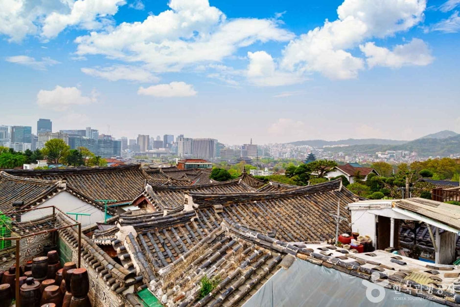
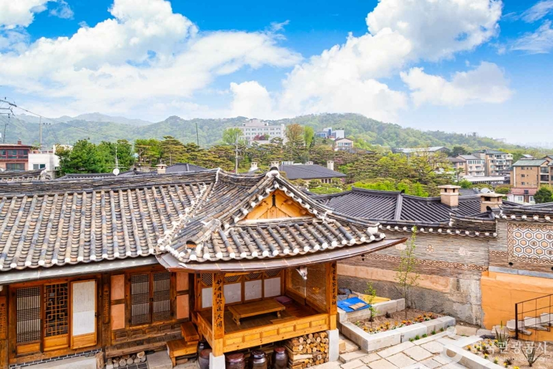
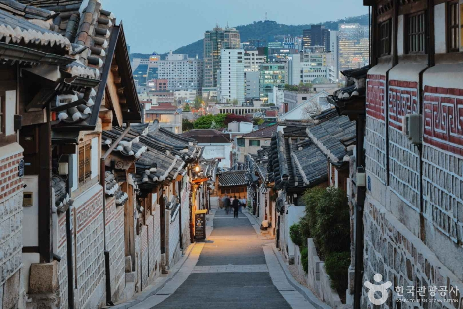
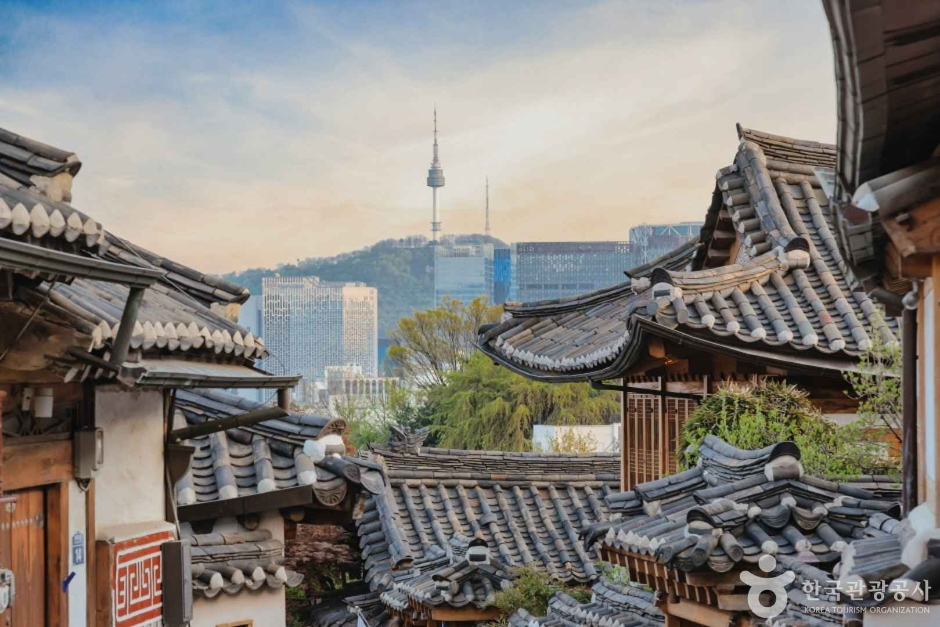
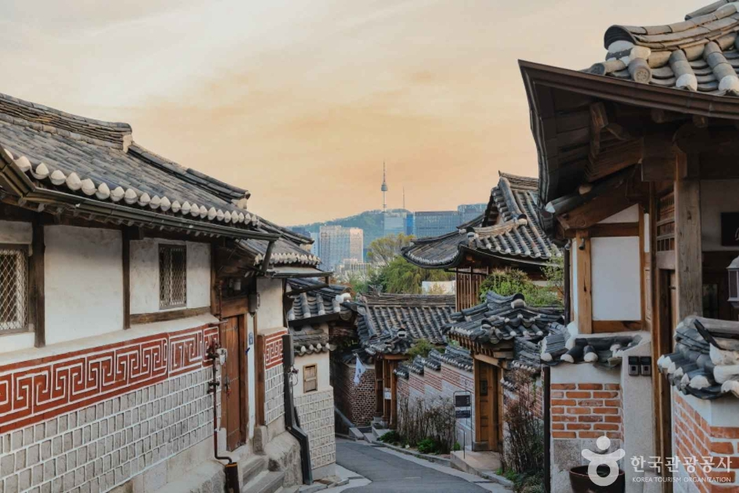

Bukchon Hanok Village Guide: Overview
This Bukchon Hanok Village guide covers Seoul's best-known neighbourhood of traditional Korean houses (hanok) in Jongno-gu. Bukchon Hanok Village sits on the slope between Gyeongbokgung and Changdeokgung palaces, and its tiled roofs and stone-walled alleys look out over downtown Seoul and N Seoul Tower.
It is also a real neighbourhood where people live, and since 2024 Jongno-gu has managed it as a special management area, with visiting hours in the busiest alleys and a ban on tour buses. This guide covers what to see, how to get there and the current rules. We checked the details against Korea Tourism Organization (KTO) data, Visit Seoul, the Seoul Hanok Portal and Jongno-gu's official notices.
"Seoul's most beautiful rooftops, a short walk from two palaces. Come between 10:00 and 17:00 and walk as quietly as you would in your own street."

A Lived-In Museum of Seoul Homes
The name Bukchon means "North Village": the area north of the Cheonggyecheon stream and Jongno street. In the Joseon era it was home to royal relatives and high officials, close to the palaces. KTO calls it "a street museum in the middle of the city" because of its many historic sites and cultural assets.
Many of the hanok you see today were built in the 1920s and 1930s, when large plots were split into smaller city hanok. Old neighbourhood names such as Gahoe-dong, Gye-dong, Jae-dong and Sagan-dong still carry that history. Today the houses mix family homes, guesthouses, small museums, craft workshops and cafés.

What to See: Rooftop Views and Hanok Alleys
The classic view is the downhill alley of Bukchon-ro 11-gil in Gahoe-dong, where rows of tiled roofs drop toward the high-rises of central Seoul. It is the most photographed spot, and it is inside the red zone, so go between 10:00 and 17:00. Higher up, look back for rooftop views toward N Seoul Tower and Bugaksan.
Seoul marks a set of photo spots called the Bukchon 8 Views, from a view over Changdeokgung to the stone stairs of Samcheong-dong. Along Gyedong-gil and the lanes toward Samcheong-dong you will find small museums, traditional craft workshops, tea houses and hanbok rental shops. KTO lists 37 Gyedong-gil as the village address.


2026 Visiting Rules: Red Zone, Hours and Fines
Jongno-gu made Bukchon a special management area on July 1, 2024, under Korea's Tourism Promotion Act. The area is split into zones, and two rules carry fines:
Red zone visiting hours. In about 34,000 m² around Bukchon-ro 11-gil, tourists may visit only from 10:00 to 17:00. From 17:00 to 10:00, sightseeing there (taking photos or videos, lingering, or wandering without using a shop) can bring a 100,000 KRW fine, in force since March 1, 2025. Officers warn first. Residents, their guests, shop customers, people staying in the area and people just passing through are exempt.
Charter bus ban. Since January 1, 2026, tour buses with 16 or more seats may not use about 2.3 km of Bukchon-ro, Bukchon-ro 4-gil, Bukchon-ro 5-gil and Changdeokgung 1-gil at any time. The orange zone around Bukchon-ro 5ga-gil and Gyedong-gil has etiquette signs but no set hours.
Visitor Information
| Item | Details |
|---|---|
| Address | 37 Gyedong-gil, Jongno-gu, Seoul (서울특별시 종로구 계동길 37), as listed by KTO |
| Phone | Bukchon Tourist Information Center +82-2-2148-4161; Jongno-gu Tourism Division +82-2-2148-1853 |
| Open | All year; free |
| Red zone hours | Tourists 10:00–17:00 only around Bukchon-ro 11-gil; 100,000 KRW fine for sightseeing 17:00–10:00 |
| Nearest station | Anguk Station (Line 3), exit 2; about a 10-minute walk uphill to the hanok alleys |
| Tour buses | Charter buses (16+ seats) banned at all times on about 2.3 km of Bukchon roads since Jan 1, 2026 |
| Parking | None for visitors; use the subway or bus |
| Official info | Seoul Hanok Portal (hanok.seoul.go.kr), Visit Seoul, Jongno-gu Culture Platform |
Sources: Korea Tourism Organization data for Bukchon Hanok Village (북촌한옥마을); Visit Seoul; the Seoul Hanok Portal's red-zone notice; Jongno-gu's special management area page; the Seoul Charter Bus Association notice of April 8, 2026. Photos © Korea Tourism Organization (KOGL Type 3, attribution), unmodified. No AI-generated images.
Getting There
Take Seoul Subway Line 3 to Anguk Station and leave by exit 2. Walk north up Bukchon-ro; the hanok alleys start on the side streets to your right and left after about 10 minutes. Gyedong-gil, which starts near exit 3 and runs north to Jungang High School, is a quieter way in.
Bukchon is easy to combine with Gyeongbokgung (about 15 minutes' walk west), Changdeokgung (just east) and Samcheong-dong. Tour groups are dropped off near the National Museum of Modern and Contemporary Art, opposite Changdeokgung, or by Tapgol Park.
Tips for Visiting
- Respect the residents: keep your voice down, don't open gates or doors, don't photograph people's homes from inside their gates, and take your rubbish with you. KTO lists trespassing, unauthorised photos, littering and noise as banned.
- Time it right: arrive around 10:00 on a weekday. In late November the sun sets around 17:15, and the red zone closes to tourists at 17:00.
- Wear good shoes: the alleys are steep and some are stepped.
- Wearing hanbok? Rent near Anguk Station, then walk on to Gyeongbokgung, where visitors in hanbok get free entry.
- Spend locally: a museum, workshop class or tea house supports the neighbourhood more than just passing through for photos.

How It Compares with Other Seoul Hanok Areas
| Bukchon Hanok Village | Ikseon-dong Hanok Street | Namsangol Hanok Village | |
|---|---|---|---|
| What it is | Lived-in hillside neighbourhood | Cafés and restaurants in 1920s–30s city hanok | Restored Joseon houses and a garden park |
| Best for | Rooftop views and old alleys | Food, cafés and evening strolls | Families and cultural activities |
| Rules | Red zone hours 10:00–17:00 | Normal street; shops set hours | Set opening hours as a park |
| Access | Anguk (Line 3) | Jongno 3-ga (Lines 1, 3, 5) | Chungmuro (Lines 3, 4) |
| Crowds | Very busy in the day | Busy, especially evenings | Moderate |
Who It Suits
- Great for: First-time Seoul visitors combining hanok alleys with the palaces.
- Great for: Photographers who are happy to shoot in daylight and respect privacy.
- Great for: Travellers in hanbok heading on to Gyeongbokgung.
- Less ideal: Visitors with limited mobility or strollers; the lanes are steep.
- Less ideal: Night or early-morning photo walks; the red zone is closed to tourists from 17:00 to 10:00.
Plan Your Seoul Trip
Bukchon Hanok Village FAQ
Where is Bukchon Hanok Village?
Bukchon Hanok Village (북촌한옥마을) is in Jongno-gu, central Seoul, on the hillside between Gyeongbokgung Palace, Changdeokgung Palace and Jongmyo Shrine. It covers neighbourhoods such as Gahoe-dong, Gye-dong, Samcheong-dong and Anguk-dong. The nearest subway station is Anguk (Line 3).
What are the visiting hours in Bukchon?
The busiest alleys, around Bukchon-ro 11-gil (the "red zone"), are open to tourists only from 10:00 to 17:00. From 17:00 to 10:00 the next morning, tourist visits there are banned. The rest of Bukchon has no set hours, but people live there, so visit in the daytime and keep quiet.
Is there a fine for visiting Bukchon after 5 pm?
Yes. Since March 1, 2025, Jongno-gu can fine tourists 100,000 KRW for sightseeing in the red zone between 17:00 and 10:00, and the rule applies to foreign visitors too. Patrol officers warn first and fine only people who ignore the warning. Residents, their guests, shop customers, people staying in the area and people just passing through are exempt, as long as they are not sightseeing.
Is Bukchon Hanok Village free?
Yes. The village is a residential neighbourhood with no entrance fee and it is open all year. Some museums, workshops and cafés inside charge their own fees.
Can tour buses drive into Bukchon?
No. Since January 1, 2026, charter buses with 16 or more seats are banned at all times from about 2.3 km of Bukchon-ro, Bukchon-ro 4-gil, Bukchon-ro 5-gil and Changdeokgung 1-gil, with fines of 300,000–500,000 KRW. Groups are dropped off near the National Museum of Modern and Contemporary Art, opposite Changdeokgung or by Tapgol Park and walk in. There is no parking for visitors.